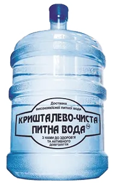

Доставка води Бровари — кришталево чиста вода з доставкою в Бровари та Київ
Якісна вода з 8-ступеневою системою очищення. Чистий смак, багатоступеневий контроль якості та доставка прямо до ваших дверей.
Замовити першу пляшку безкоштовно!
Доставка води додому й в офіс у Броварах і Києві
Доставка води в Броварах після 20.00 — Доставка води додому й в офіс по місту Бровари. «Кришталево-чиста питна вода» — це очищена вода високої якості в місті Бровари, яка підходить для регулярного вживання та приготування їжі. Щоденне вживання такої води — гарна звичка для підтримання питного режиму та загального самопочуття. Багатоступеневе очищення забезпечує стабільний склад, тому вода має приємний смак і не має запаху.
Зручний сервіс доставки води в квартири, офіси, ресторани та приватні будинки міста Бровари і Київ. Для Вашої зручності доставка води в Бровари відбувається у вечірній час після 20.00. Оптовим клієнтам виконуємо розлив води за спеціальними цінами!
💎 Висока якість
Багатоступеневе очищення забезпечує стабільний склад і природну м'якість води.
💰 Вигідна ціна
Доступна вартість за високого стандарту очищення. Перша пляшка для нових клієнтів — у подарунок!
🚚 Оперативний сервіс
Точна доставка в Броварах і Києві. Ми цінуємо ваш час і привозимо воду чітко за графіком.
якість води для доставки в Броварах
Доставка води в Броварах: чому обирають нас
- ✅ Проходить 8 етапів очищення та контролю якості води.
- ✅ Збалансований мінеральний склад, що підходить для щоденного пиття.
- ✅ Підходить для регулярного вживання дітям, літнім людям і тим, хто веде активний або малорухливий спосіб життя.
- ✅ Наша чиста, смачна вода за смаковими якостями схожа на талу воду.
«Кришталево-чиста питна вода» проходить очищення методом зворотного осмосу та озонової стерилізації — це одна з найретельніших технологій очищення питної води. Багатоступеневе очищення від домішок і сторонніх речовин забезпечує стабільну якість і приємний смак.
Стабільна якість і приємний смак — для щоденного пиття вдома й в офісі.
склад води та доставка води Бровари
Вода «Кришталево-чиста» завдяки високому рівню очищення має приємний чистий смак і стабільний показник pH близько 7,5.
Ми очищаємо воду перевіреними технологіями:
- 🔬 Система зворотного осмосу (зворотно-осмотична)
- 💨 Озонова стерилізація (озонування)
наші сертифікати якості доставки води Бровари
Вода – це основа щоденного питного режиму, тож подбайте про те, щоб вона завжди була чистою.
Доставка води в Броварах «Кришталево-чиста» для Вашого щоденного комфорту!
Щоб замовити воду в місті Бровари, просто зателефонуйте нам прямо зараз!
Як замовити воду за 1 хвилину
Залиште заявку
Зателефонуйте нам або напишіть у Telegram-бот. Ми підберемо зручний час доставки.
Ми привозимо воду
Наш кур'єр доставить пляшки точно в строк прямо у вашу квартиру або офіс.
Насолоджуйтеся смаком
Пийте чисту, якісну воду щодня.
8 ступенів очищення
Механіка
Видалення піску, іржі та великих завислих часточок.
Вугільний фільтр
Видалення хлору та органічних сполук.
Зворотний осмос
Видалення 99% усіх розчинених домішок і солей.
Озонування
Стерилізація від вірусів і бактерій.
Кисень
Насичення води O2 для свіжості та смаку.
Мінералізація
Повернення потрібних Mg, Ca і K у точній дозі.
Баланс pH
Встановлення стабільного рівня pH 7,5.
УФ-фініш
Фінальна стерилізація перед розливом.
💧 Пляшка 19 літрів
Оптимальний вибір для дому й офісу. Екологічна багаторазова тара, що підходить для будь-якого кулера.
Що про нас кажуть клієнти
"Замовляю воду Crystal Water вже два роки. Дуже зручно, що привозять увечері — мені якраз підходить за графіком роботи. Вода справді смачна!"
"Дуже якісний сервіс у Броварах. Завжди ввічливі кур'єри, вода чиста, жодної домішки хлору. Діти п'ють із задоволенням."
"Користуємося водою в офісі. Якість стабільна, ціна адекватна. Дякуємо за оперативність і першу безкоштовну пляшку!"
Часті запитання
Скільки коштує бутель води 19,9 л?
100 грн за бутель. Застава за бутель — 225 грн (сплачується під час першої доставки й повертається у разі припинення співпраці).
Яке мінімальне замовлення й чи є доставка ввечері?
Мінімальне замовлення — 2 бутлі. Доставка в Броварах можлива після 20:00.
Як очищується вода?
Вода проходить 8 ступенів очищення, зокрема обернений осмос і озонну стерилізацію. Рівень pH — близько 7,5.
Чи потрібен кулер або помпа?
Для бутля підійде кулер або помпа Blue Rain (160 грн). Ціну й наявність кулерів уточнюйте в менеджера.
Чи можна спробувати воду безкоштовно?
Так, першу пляшку можна замовити на пробу безкоштовно. Також ми безкоштовно перевіряємо зразки води експрес-аналізом TDS.
Чи доставляєте ви до Києва і як замовити?
Так, ми доставляємо воду додому й в офіси в Броварах і Києві. Замовте за телефоном +38 (063) 788-68-80 або +38 (063) 530-40-50, у Telegram-боті @CrystalWaterBro_bot чи через форму на сайті.